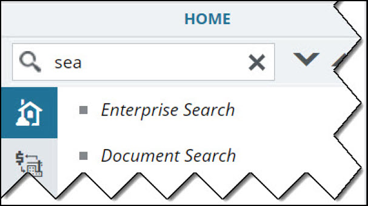

Introduction to the Mind User Interface
Every time you log in, you are navigated to the Mind Home page.
- Roles assigned to you
- Projects to which you are invited
- Current workflow status of the form
The high-level modules, elements, and features available in Mind User Interface (UI) is illustrated in the following figure:

The UI of Mind contains various elements that are described as follows:
| Number | Item | Description |
|---|---|---|
| 1 | Profile Menu | View your profile, change your application password, log out, access the application Online Help, and view the application version information. Click your initials to view the options.
|
| 2 | Favorites | Bookmark frequently used pages for easy and quick access from anywhere in the application. For information on accessing and managing your favorites, refer to Managing Favorites. |
| 3 | Page navigation trail/Breadcrumbs | The trail of page navigation links is displayed to track your location within the application. Click a link to open the page.
Expand the breadcrumb trail to access the whole trail.
|
| 4 | Form finder | Type the name of the form, or part of the form name to easily find the form in the navigation pane.  |
| 5 | Module Name | Displays the name of the module you are currently in. |
| 6 | Module Menu | Buttons to access the various modules of Mind. |
| 7 | Toggle button | Button to show, hide, and re-size application panes. Docking the left pane provides more space to view information in the right pane. Click to hide the left navigation pane. Click to view the left navigation pane. |
| 8 | Left navigation pane | Links to the forms available in the module. |
| 9 | Right action pane | Displays the work area for forms and modules. |
| 10 | Loading bar | Displays in motion when page load is in progress. |
| 11 | Toggle button | Button to show the names of the modules in Mind. Click the toggle button
Click the toggle button to hide the module names. |


 to view the module names.
to view the module names.